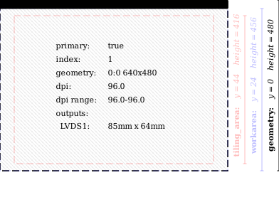
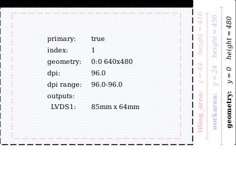
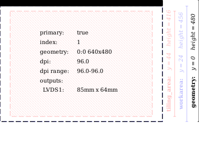
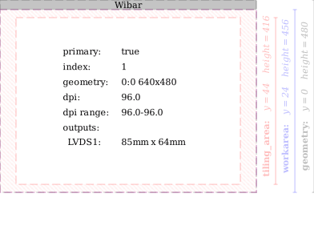
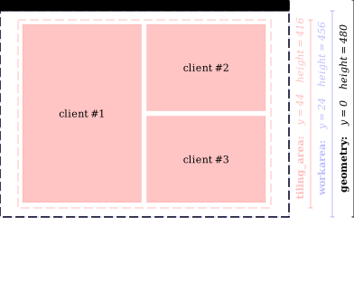
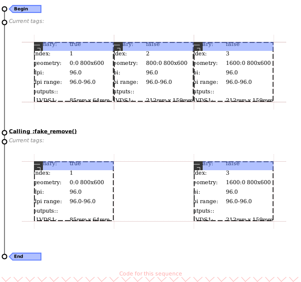
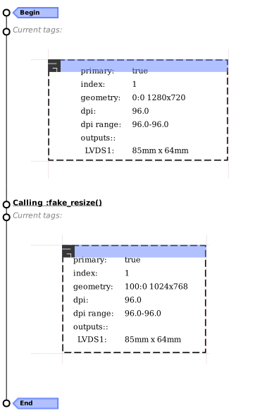
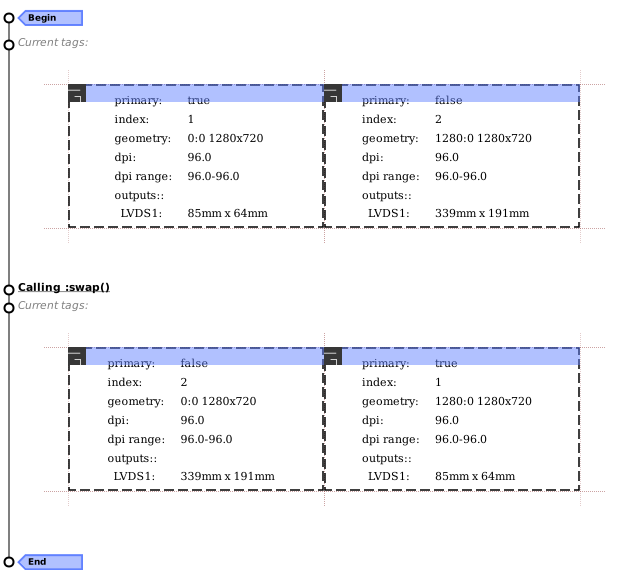

Module: screen
awesome screen API.
Screen objects can be added and removed over time. To get a callback for all current and future screens, use awful.screen.connect_for_each_screen:
awful.screen.connect_for_each_screen(function(s) -- do something end)
It is also possible loop over all current screens using:
for s in screen do -- do something end
Most basic Awesome objects also have a screen property, see mouse.screen client.screen, wibox.screen and tag.screen.
Furthermore to the classes described here, one can also use signals as described in signals.

Core components relationship
|
|
|||||||||||||||||||||||||||||||||||||||
| Legend: c: a client object, t: a tag object, s: a screen object, k: an awful.key object, b: a awful.button object, n: a naughty.notification object | ||||||||||||||||||||||||||||||||||||||||

Info:
- Copyright: 2008-2009 Julien Danjou
-
Originally authored by: Julien Danjou <julien@danjou.info>
(Full contributors list available on our github project)
Constructors
| screen.fake_add (x, y, width, height) | Add a fake screen. | |
Static module functions
| screen.instances () -> () | Get the number of instances. | |
| screen.screen () | Iterate over screens. | |
| screen.count () -> () | Get the number of screens. | |
| screen.disconnect_signal (name, func) | Disconnect from a signal. | |
| screen.emit_signal (name, ...) | Emit a signal. | |
| screen.connect_signal (name, func) | Connect to a signal. | |
| awful.screen.getbycoord (x, y) -> nil or number | Return the screen index corresponding to the given (pixel) coordinates. | |
| awful.screen.focus (_screen) | Move the focus to a screen. | |
| awful.screen.focus_bydirection (dir, _screen) | Move the focus to a screen in a specific direction. | |
| awful.screen.focus_relative (offset) | Move the focus to a screen relative to the current one, | |
| awful.screen.preferred (c) -> screen | Get the preferred screen in the context of a client. | |
| awful.screen.focused {[args]} -> nil or screen | Get the focused screen. | |
| screen.get_bounding_geometry {[args]} -> table | Get a placement bounding geometry. | |
| awful.screen.connect_for_each_screen (func) | Call a function for each existing and created-in-the-future screen. | |
| awful.screen.disconnect_for_each_screen (func) | Undo the effect of connectforeach_screen. | |
| awful.screen.set_auto_dpi_enabled (enabled) | Enable the automatic calculation of the screen DPI (experimental). | |
Object properties
| geometry | table | The screen coordinates. read only | |
| index | integer | The internal screen number. read only | |
| workarea | table | The screen workarea. read only | |
| tiling_area | table | The area where clients can be tiled. read only | |
| content | gears.surface | Take a screenshot of the physical screen. read only | |
| padding | table | The screen padding. | |
| outputs | table | A list of outputs for this screen with their size in mm. read only | |
| clients | table | The list of visible clients for the screen. | |
| hidden_clients | table | Get the list of clients assigned to the screen but not currently visible. | |
| all_clients | table | All clients assigned to the screen. | |
| tiled_clients | table | Tiled clients for the screen. | |
| tags | table | A list of all tags on the screen. read only | |
| selected_tags | table | A list of all selected tags on the screen. read only | |
| selected_tag | tag | The first selected tag. read only | |
| dpi | number | The number of pixels per inch of the screen. | |
| minimum_dpi | number | The lowest density DPI from all of the (physical) outputs. read only | |
| maximum_dpi | number | The highest density DPI from all of the (physical) outputs. read only | |
| preferred_dpi | number | The preferred DPI from all of the (physical) outputs. read only | |
| mm_maximum_size | number | The maximum diagonal size in millimeters. | |
| mm_minimum_size | number | The minimum diagonal size in millimeters. | |
| inch_maximum_size | number | The maximum diagonal size in inches. | |
| inch_minimum_size | number | The minimum diagonal size in inches. | |
Object methods
| :fake_remove () | Remove a screen. | |
| :fake_resize (x, y, width, height) | Resize a screen. | |
| :swap (s) | Swap a screen with another one in global screen list. | |
| :get_square_distance (x, y) -> number | Get the square distance between a screen and a point. | |
| :get_next_in_direction (self, dir) | Get the next screen in a specific direction. | |
| :get_clients ([stacked=true]) -> table | Get the list of visible clients for the screen. | |
| :get_all_clients ([stacked=true]) -> table | Get all clients assigned to the screen. | |
| :get_tiled_clients ([stacked=true]) -> table | Get tiled clients for the screen. | |
| :split ([ratios[, mode]]) | Split the screen into multiple screens. | |
| :emit_signal (name, ...) | Emit a signal. | Inherited from gears.object |
| :connect_signal (name, func) | Connect to a signal. | Inherited from gears.object |
| :weak_connect_signal (name, func) | Connect to a signal weakly. | Inherited from gears.object |
Signals
| scanning | AwesomeWM is about to scan for existing screens. | |
| scanned | AwesomeWM is done scanning for screens. | |
| primary_changed | ||
| added | This signal is emitted when a new screen is added to the current setup. | |
| removed | This signal is emitted when a screen is removed from the setup. | |
| list | This signal is emitted when the list of available screens changes. | |
| swapped | When 2 screens are swapped | |
| property::viewports | This signal is emitted when the list of physical screen viewport changes. | |
| request::desktop_decoration | Emitted when a new screen is added. | |
| request::wallpaper | Emitted when a new screen needs a wallpaper. | |
| request::create | When a new (physical) screen area has been added. | |
| request::remove | When a physical monitor viewport has been removed. | |
| request::resize | When a physical viewport resolution has changed or it has been replaced. | |
| tag::history::update | When the tag history changed. | |
Request handlers
| awful.screen.create_screen_handler | Default handler for request::create. | |
| awful.screen.remove_screen_handler | Default handler for request::remove. | |
| awful.screen.resize_screen_handler | Default handler for request::resize. | |
Deprecated functions
| awful.screen.getdistance_sq [deprecated] | Get the square distance between a screen and a point. | |
| awful.screen.padding [deprecated] | Get or set the screen padding. | |
Fields
| screen.primary | screen | The primary screen. | |
| screen.automatic_factory | N/A | If screen objects are created automatically when new viewports are detected. | |
| screen.awful.screen.default_focused_args | N/A | The defaults arguments for awful.screen.focused. | |
Constructors
- screen.fake_add (x, y, width, height)
-
Add a fake screen.
To vertically split the first screen in 2 equal parts, use:
local geo = screen[1].geometry local new_width = math.ceil(geo.width/2) local new_width2 = geo.width - new_width screen[1]:fake_resize(geo.x, geo.y, new_width, geo.height) screen.fake_add(geo.x + new_width, geo.y, new_width2, geo.height)Both virtual screens will have their own taglist and wibars.
Parameters:
- x integer X-coordinate for screen.
- y integer Y-coordinate for screen.
- width integer width for screen.
- height integer height for screen.
Returns:
-
The new screen.
Static module functions
- screen.instances () -> ()
-
Get the number of instances.
Returns:
-
The number of screen objects alive.
- screen.screen ()
-
Iterate over screens.
Usage:
for s in screen do print("Oh, wow, we have screen " .. tostring(s)) end
- screen.count () -> ()
-
Get the number of screens.
Returns:
-
The screen count, at least 1.
- screen.disconnect_signal (name, func)
-
Disconnect from a signal.
Parameters:
- name string The name of the signal.
- func function The callback that should be disconnected.
- screen.emit_signal (name, ...)
-
Emit a signal.
Parameters:
- name string The name of the signal.
- ... Extra arguments for the callback functions. Each connected function receives the object as first argument and then any extra arguments that are given to emit_signal().
- screen.connect_signal (name, func)
-
Connect to a signal.
Parameters:
- name string The name of the signal.
- func function The callback to call when the signal is emitted.
- awful.screen.getbycoord (x, y) -> nil or number
-
Return the screen index corresponding to the given (pixel) coordinates.
The number returned can be used as an index into the global screen table/object.
Parameters:
- x number The x coordinate
- y number The y coordinate
Returns:
-
optional number
The screen index
- awful.screen.focus (_screen) · 1 permission
-
Move the focus to a screen.
This moves the mouse pointer to the last known position on the new screen, or keeps its position relative to the current focused screen.
Parameters:
- _screen screen Screen number (defaults / falls back to mouse.screen).
Click to display more Requested actions or permissions:
Class Permission Context Default Description client activate screen.focus granted The most recent focused client for this screen should be re-activated. - awful.screen.focus_bydirection (dir, _screen)
-
Move the focus to a screen in a specific direction.
This moves the mouse pointer to the last known position on the new screen, or keeps its position relative to the current focused screen.
Parameters:
- dir The direction, can be either "up", "down", "left" or "right".
- _screen Screen.
- awful.screen.focus_relative (offset)
-
Move the focus to a screen relative to the current one, This moves the mouse pointer to the last known position on the new screen,
or keeps its position relative to the current focused screen.
Parameters:
- offset int Value to add to the current focused screen index. 1 to focus the next one, -1 to focus the previous one.
- awful.screen.preferred (c) -> screen
-
Get the preferred screen in the context of a client.
This is exactly the same as awful.screen.focused except that it avoids clients being moved when Awesome is restarted. This is used in the default rc.lua to ensure clients get assigned to the focused screen by default.
Parameters:
- c client A client.
Returns:
-
screen
The preferred screen.
- awful.screen.focused {[args]} -> nil or screen
-
Get the focused screen.
It is possible to set awful.screen.default_focused_args to override the default settings.
Parameters:
- args
- client boolean Use the client screen instead of the mouse screen. (default false)
- mouse boolean Use the mouse screen (default true)
Returns:
-
optional screen
The focused screen object, or
nilin case no screen is present currently. - args
- screen.get_bounding_geometry {[args]} -> table
-
Get a placement bounding geometry.
This method computes the different variants of the "usable" screen geometry.
Parameters:
- args The arguments
- honor_padding boolean Whether to honor the screen's padding. (default false)
- honor_workarea boolean Whether to honor the screen's workarea. (default false)
- margins int or table Apply some margins on the output. This can either be a number or a table with left, right, top and bottom keys. (optional)
- tag tag Use this tag's screen. (optional)
- parent drawable A parent drawable to use as base geometry. (optional)
- bounding_rect
table
A bounding rectangle. This parameter is
incompatible with
honor_workarea. (optional)
Returns:
-
table
A table with x, y, width and height.
Usage:
local geo = screen:get_bounding_geometry { honor_padding = true, honor_workarea = true, margins = { left = 20, }, }
- args The arguments
- awful.screen.connect_for_each_screen (func)
-
Call a function for each existing and created-in-the-future screen.
Parameters:
- func The function to call.
- screen screen The screen.
- func The function to call.
- awful.screen.disconnect_for_each_screen (func)
-
Undo the effect of connectforeach_screen.
Parameters:
- func function The function that should no longer be called.
- awful.screen.set_auto_dpi_enabled (enabled)
-
Enable the automatic calculation of the screen DPI (experimental).
This will cause many elements such as the font and some widgets to be scaled so they look the same (physical) size on different devices with different pixel density.
It is calculated using the information provided from
xrandr.When enabled, the theme and configuration must avoid using pixel sizes for different elements as this will cause misalignment or hidden content on some devices.
Note that it has to be called early in rc.lua and requires restarting awesome to take effect. It is disabled by default and changes introduced in minor releases of Awesome may slightly break the behavior as more components gain support for HiDPI.
When disabled the DPI is acquired from the
Xft.dpiX resource (xrdb), defaulting to 96.Parameters:
- enabled boolean Enable or disable automatic DPI support.
Object properties
- geometry table · read only
-
The screen coordinates.
Signal:
- property::geometry

- index integer · read only
-
The internal screen number.
- The indeces are a continuous sequence from 1 to
screen.count(). - It is NOT related to the actual screen position relative to each other.
- 1 is NOT necessarily the primary screen.
- When screens are added and removed indices CAN change.
If you really want to keep an array of screens you should use something along:
local myscreens = setmetatable({}. {__mode="k"}) myscreens[ screen[1] ] = "mydata"But it might be a better option to simply store the data directly in the screen object as:
screen[1].mydata = "mydata"Remember that screens are also objects, so if you only want to store a simple property, you can do it directly:
screen[1].answer = 42See also:
- The indeces are a continuous sequence from 1 to
- workarea table · read only
-
The screen workarea.
The workarea is a subsection of the screen where clients can be placed. It usually excludes the toolbars (see awful.wibar) and dockable clients (see client.dockable) like WindowMaker DockAPP.
It can be modified be altering the wibox or client struts.
Signal:
- property::workarea

-- With a padding, the tiled clients wont use 20px at the top and bottom -- and 40px on the left and right. screen[1].padding = { left = 40, right = 40, top = 20, bottom = 20, } -- This will shift the workarea by 24px at the top. local wibar = awful.wibar { position = "top", height = 24, }See also:
- tiling_area table · read only
-
The area where clients can be tiled.
This property holds the area where clients can be tiled. Use the padding property, wibox.struts and client.struts to modify this area.

See also:
- content gears.surface · read only
-
Take a screenshot of the physical screen.
Reading this property returns a screenshot of the physical (Xinerama) screen as a cairo surface.
- padding table · 1 theme variable
-
The screen padding.
This adds a "buffer" section on each side of the screen.
Signal:
- property::padding

-- With a padding, the tiled clients wont use 20px at the top and bottom -- and 40px on the left and right. screen[1].padding = { left = 40, right = 40, top = 20, bottom = 20, }
Click to display more Consumed theme variables:
Theme variable Usage beautiful.maximized_honor_paddingHonor the screen padding when maximizing. - outputs table · read only
-
A list of outputs for this screen with their size in mm.
Please note that the table content may vary. In some case, it might also be empty.
An easy way to check if a screen is the laptop screen is usually:
if s.outputs["LVDS-1"] then -- do something endSignal:
- property::outputs
- clients table
-
The list of visible clients for the screen.
Minimized and unmanaged clients are not included in this list as they are technically not on the screen.
The clients on tags that are currently not visible are not part of this list.
Clients are returned using the stacking order (from top to bottom). See get_clients if you want them in the order used in the tasklist by default.
Type constraints:
- table The clients list, ordered from top to bottom.
See also:
- hidden_clients table
-
Get the list of clients assigned to the screen but not currently visible.
This includes minimized clients and clients on hidden tags.
Type constraints:
- table The clients list, ordered from top to bottom.
See also:
- all_clients table
-
All clients assigned to the screen.
Type constraints:
- table The clients list, ordered from top to bottom.
See also:
- tiled_clients table
-
Tiled clients for the screen.
Same as clients, but excluding:
- fullscreen clients
- maximized clients
- floating clients

Type constraints:
- table The clients list, ordered from top to bottom.
- tags table · read only
-
A list of all tags on the screen.
Use tag.screen,
awful.tag.add,awful.tag.newort:delete()to alter this list. - selected_tags table · read only
-
A list of all selected tags on the screen.
See also:
- selected_tag tag · read only
-
The first selected tag.
See also:
- dpi number
-
The number of pixels per inch of the screen.
The default DPI comes from the X11 server. In most case, it will be 96. If
autodpiis set totrueon the screen, it will use the least dense dpi from the screen outputs. Most of the time, screens only have a single output, however it will have two (or more) when "clone mode" is used (eg, when a screen is duplicated on a projector).Type constraints:
- number the DPI value.
- minimum_dpi number · read only
-
The lowest density DPI from all of the (physical) outputs.
Type constraints:
- number the DPI value.
- maximum_dpi number · read only
-
The highest density DPI from all of the (physical) outputs.
Type constraints:
- number the DPI value.
- preferred_dpi number · read only
-
The preferred DPI from all of the (physical) outputs.
This is computed by normalizing all output to fill the area, then picking the lowest of the resulting virtual DPIs.
Type constraints:
- number the DPI value.
- mm_maximum_size number
- The maximum diagonal size in millimeters.
- mm_minimum_size number
- The minimum diagonal size in millimeters.
- inch_maximum_size number
- The maximum diagonal size in inches.
- inch_minimum_size number
- The minimum diagonal size in inches.
Object methods
- :fake_remove ()
-
Remove a screen.

Usage:
screen[2]:fake_remove() - :fake_resize (x, y, width, height)
-
Resize a screen.
Calling this will resize the screen even if it no longer matches the viewport size.

Parameters:
- x integer The new X-coordinate for screen.
- y integer The new Y-coordinate for screen.
- width integer The new width for screen.
- height integer The new height for screen.
Usage:
screen[1]:fake_resize(100, 0, 1024, 768)
- :swap (s)
-
Swap a screen with another one in global screen list.

Parameters:
- s client A screen to swap with.
Usage:
screen[2]:swap(screen[1])
- :get_square_distance (x, y) -> number
-
Get the square distance between a screen and a point.
Parameters:
- x number X coordinate of point
- y number Y coordinate of point
Returns:
-
number
The squared distance of the screen to the provided point.
- :get_next_in_direction (self, dir)
-
Get the next screen in a specific direction.
This gets the next screen relative to this one in the specified direction.
Parameters:
- self Screen.
- dir The direction, can be either "up", "down", "left" or "right".
- :get_clients ([stacked=true]) -> table
-
Get the list of visible clients for the screen.
This is used by screen.clients internally (with
stacked=true).Parameters:
- stacked boolean Use stacking order? (top to bottom) (default true)
Returns:
-
table
The clients list.
- :get_all_clients ([stacked=true]) -> table
-
Get all clients assigned to the screen.
This is used by all_clients internally (with
stacked=true).Parameters:
- stacked boolean Use stacking order? (top to bottom) (default true)
Returns:
-
table
The clients list.
- :get_tiled_clients ([stacked=true]) -> table
-
Get tiled clients for the screen.
This is used by
tiles_clientsinternally (withstacked=true).Parameters:
- stacked boolean Use stacking order? (top to bottom) (default true)
Returns:
-
table
The clients list.
- :split ([ratios[, mode]])
-
Split the screen into multiple screens.
This is useful to turn ultrawide monitors into something more useful without fancy client layouts:

screen[1]:split({1/5, 3/5, 1/5})It can also be used to turn a vertical "side" screen into 2 smaller screens:
screen[1]:split()Parameters:
- ratios table The different ratios to split into. If none is provided, it is split in half. (optional)
- mode string Either "vertical" or "horizontal". If none is specified, it will split along the longest axis. (optional)
- :emit_signal (name, ...) · Inherited from gears.object
-
Emit a signal.
Parameters:
- name string The name of the signal.
- ... Extra arguments for the callback functions. Each connected function receives the object as first argument and then any extra arguments that are given to emit_signal().
- :connect_signal (name, func) · Inherited from gears.object
-
Connect to a signal.
Parameters:
- name string The name of the signal.
- func function The callback to call when the signal is emitted.
- :weak_connect_signal (name, func) · Inherited from gears.object
-
Connect to a signal weakly.
This allows the callback function to be garbage collected and automatically disconnects the signal when that happens.
Warning: Only use this function if you really, really, really know what you are doing.
Parameters:
- name string The name of the signal.
- func function The callback to call when the signal is emitted.
Signals
- scanning
-
AwesomeWM is about to scan for existing screens.
Connect to this signal when code needs to be executed after the Lua context is initialized and modules are loaded, but before screens are added.
To manage screens manually, set
screen.automatic_factory = falseand connect to the property::viewports signal. It is then possible to use screen.fake_add to create virtual screens. Be careful when using this, when done incorrectly, no screens will be created. Using Awesome with zero screens is not supported.See also:
- scanned
-
AwesomeWM is done scanning for screens.
Connect to this signal to execute code after the screens have been created, but before the clients are added. This signal can also be used to split physical screens into multiple virtual screens before the clients (and their rules) are executed.
Note that if no screens exist at this point, the fallback code will be triggered and the default (detected) screens will be added.
See also:
- primary_changed
- added
- This signal is emitted when a new screen is added to the current setup.
- removed · 1 permission
-
This signal is emitted when a screen is removed from the setup.
Click to display more Requested actions or permissions:
Class Permission Context Default Description tag screen removed granted When a screen is removed, request::screenis called on all screen tags to try to relocate them. - list
- This signal is emitted when the list of available screens changes.
- swapped
-
When 2 screens are swapped
Arguments:
- screen screen The other screen
- is_source boolean If self is the source or the destination of the swap
- property::viewports
-
This signal is emitted when the list of physical screen viewport changes.
Each viewport in the list corresponds to a physical screen rectangle, which is not the viewports property of the screen objects.
Each entry in the viewports entry has the following keys:
- geometry (table): A table with an
x,y,widthandheightkeys. - outputs (table): All outputs sharing this viewport.
- maximum_dpi (number): The DPI of the most dense output.
- minimum_dpi (number): The DPI of the least dense output.
- preferred_dpi (number): The optimal DPI.
Arguments:
- viewports table A table containing all physical viewports.
See also:
- geometry (table): A table with an
- request::desktop_decoration · 1 permission
-
Emitted when a new screen is added.
The handler(s) of this signal are responsible of adding elements such as bars, docks or other elements to a screen. The signal is emitted when a screen is added, including during startup.
The only default implementation is the one provided by rc.lua.
Arguments:
- context string The context.
Click to display more Requested actions or permissions:
Class Permission Context Default Description screen wallpaper added granted When the decorations needs to be added to a new screen. - request::wallpaper · 3 permissions
-
Emitted when a new screen needs a wallpaper.
The handler(s) of this signal are responsible to set the wallpaper. The signal is emitted when a screen is added (including at startup), when its DPI changes or when its geometry changes.
The only default implementation is the one provided by rc.lua.
Arguments:
- context string The context.
Click to display more Requested actions or permissions:
Class Permission Context Default Description screen wallpaper added granted When the wallpaper needs to be added to a new screen. screen wallpaper geometry granted When the wallpaper needs to be updated because the resolution changed. screen wallpaper dpi granted When the wallpaper needs to be updated because the DPI changed. - request::create
-
When a new (physical) screen area has been added.
Important: This only exists when Awesome is started with
--screen off. Please also note that this doesn't mean it will appear when a screen is physically plugged. Depending on the configuration a tool likearandror thexrandrcommand is needed.The default handler will create a screen that fills the area.
To disconnect the default handler, use:
screen.disconnect_signal( "request::create", awful.screen.create_screen_handler )Arguments:
- viewport
- geometry
table
A table with
x,y,widthandheightkeys. - outputs
table
A table with the monitor name and possibly the
mm_widthandmm_heightvalues if they are available. - id
number
An identifier for this viewport (by pixel
resolution). It
will not change when outputs are modified, but will change when the
resolution changes. Note that if it fully disappear, the next time an
viewport with the same resolution appears, it will have a different
id. - minimum_dpi number The least dense DPI.
- maximum_dpi number The most dense DPI.
- preferred_dpi number The relative least dense DPI.
- geometry
table
A table with
- args
- context string Why was this signal sent.
See also:
- viewport
- request::remove
-
When a physical monitor viewport has been removed.
Important: This only exists when Awesome is started with
--screen off.If you replace the default handler, it is up to you to find the screen(s) associated with this viewport.
To disconnect the default handler, use:
screen.disconnect_signal( "request::remove", awful.screen.remove_screen_handler )Arguments:
- viewport
- geometry
table
A table with
x,y,widthandheightkeys. - outputs
table
A table with the monitor name and possibly the
mm_widthandmm_heightvalues if they are available. - id
number
An identifier for this viewport (by pixel
resolution). It will not change when outputs are modified, but will change
when the resolution changes. Note that if it fully disappear, the next time
an viewport with the same resolution appears, it will have a different
id. - minimum_dpi number The least dense DPI.
- maximum_dpi number The most dense DPI.
- preferred_dpi number The relative least dense DPI.
- geometry
table
A table with
- args
- context string Why was this signal sent.
See also:
- viewport
- request::resize
-
When a physical viewport resolution has changed or it has been replaced.
Important: This only exists when Awesome is started with
--screen off.Note that given the viewports are not the same, the
idwon't be the same. Also note that if multiple new viewports fit within a single "old" viewport, the resized screen will be the one with the largest total overlapping viewport (intersection.width*intersection.height), regardless of the outputs names.To disconnect the default handler, use:
screen.disconnect_signal( "request::resize", awful.screen.resize_screen_handler )Arguments:
- old_viewport
- geometry
table
A table with
x,y,widthandheightkeys. - outputs
table
A table with the monitor name and
possibly the
mm_widthandmm_heightvalues if they are available. - id
number
An identifier for this viewport (by pixel
resolution). It will not change when outputs are modified, but will change
when the resolution changes. Note that if it fully disappear, the next
time an viewport with the same resolution appears, it will have a different
id. - minimum_dpi number The least dense DPI.
- maximum_dpi number The most dense DPI.
- preferred_dpi number The relative least dense DPI.
- geometry
table
A table with
- new_viewport
- geometry
table
A table with
x,y,widthandheightkeys. - outputs
table
A table with the monitor name and
possibly the
mm_widthandmm_heightvalues if they are available. - id
number
An identifier for this viewport (by pixel
resolution). It will not change when outputs are modified, but will change
when the resolution changes. Note that if it fully disappear, the next time
an viewport with the same resolution appears, it will have a different
id. - minimum_dpi number The least dense DPI.
- maximum_dpi number The most dense DPI.
- preferred_dpi number The relative least dense DPI.
- args
- context string Why was this signal sent.
See also:
- old_viewport
- tag::history::update
- When the tag history changed.
Request handlers
- awful.screen.create_screen_handler
-
Default handler for request::create.
Important: This only exists when Awesome is started with
--screen off.A simplified implementation looks like:
function(viewport --[[, args]]) local geo = viewport.geometry local s = screen.fake_add(geo.x, geo.y, geo.width, geo.height) s:emit_signal("request::desktop_decoration") s:emit_signal("request::wallpaper") endIf you implement this by hand, you must also implement handler for the request::remove and request::resize.
See also:
- awful.screen.remove_screen_handler
-
Default handler for request::remove.
Important: This only exists when Awesome is started with
--screen off.A simplified version of the logic is:
function (viewport --[[, args]]) local geo = viewport.geometry for s in screen do if gears.geometry.rectangle.are_equal(geo, s.geometry) then s:fake_remove() return end end endSee also:
- awful.screen.resize_screen_handler
-
Default handler for request::resize.
Important: This only exists when Awesome is started with
--screen off.A simplified version of the logic is:
function (old_viewport, new_viewport --[[, args]]) local old_geo, new_geo = old_viewport.geometry, new_viewport.geometry for s in screen do local sgeo = new_viewport.geometry if gears.geometry.rectangle.are_equal(old_geo, s.geometry) then s:fake_resize( sgeo.x, sgeo.y, sgeo.width, sgeo.height ) end end endSee also:
Deprecated functions
- awful.screen.getdistance_sq [deprecated]
-
Get the square distance between a screen and a point.
Parameters:
- s Screen
- x X coordinate of point
- y Y coordinate of point
Returns:
-
The squared distance of the screen to the provided point.
See also:
- awful.screen.padding [deprecated]
-
Get or set the screen padding.
Parameters:
- _screen The screen object to change the padding on
- padding The padding, a table with 'top', 'left', 'right' and/or 'bottom' or a number value to apply set the same padding on all sides. Can be nil if you only want to retrieve padding (default nil)
Returns:
-
table
A table with left, right, top and bottom number values.
See also:
Fields
- screen.primary screen
- The primary screen.
- screen.automatic_factory N/A
-
If screen objects are created automatically when new viewports are detected.
Be very, very careful when setting this to false. You might end up with no screens. This is not supported. Always connect to the scanned signal to make sure to create a fallback screen if none were created.
See also:
- screen.awful.screen.default_focused_args N/A
- The defaults arguments for awful.screen.focused.